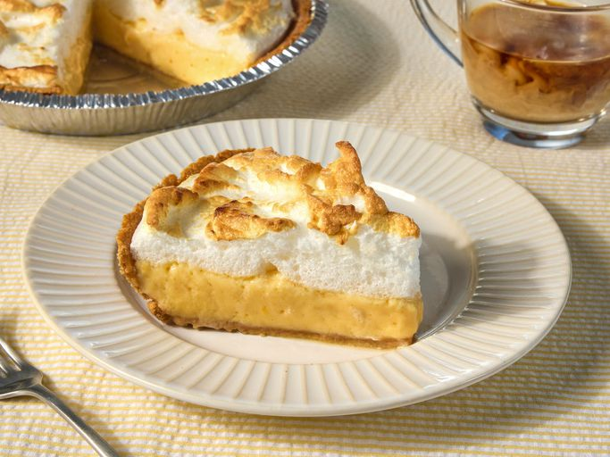

Home
Lemon Pie Recipe

This lemon icebox pie with meringue has an easy-to-make creamy lemon filling.
Total Time: 30min
Prep Time: 25min
Cook Time: 5min
Ingredients
- 5 teaspoons white sugar
- 1 (9 inch) prepared graham cracker crust
- 1 (14 ounce) can sweetened condensed milk
- ½ cup lemon juice
- 3 egg whites
Preparation
- Gather the ingredients. Preheat the broiler to 500 degrees F (260 degrees C).
- Beat condensed milk, egg yolks, and lemon juice together in a medium mixing bowl; pour mixture into graham cracker crust.
- Beat egg whites with sugar in a separate glass or metal mixing bowl until stiff peaks form. Spread evenly on top of lemon filling.
- Brown in preheated broiler just until meringue is set and golden. Keep pie refrigerated.